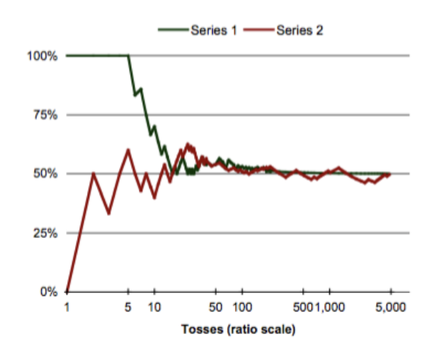
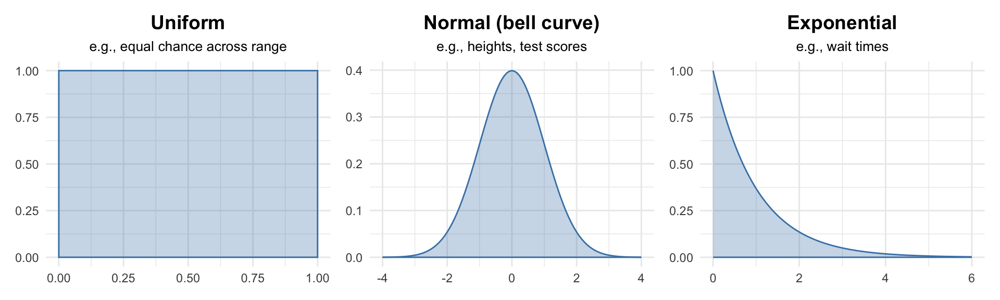
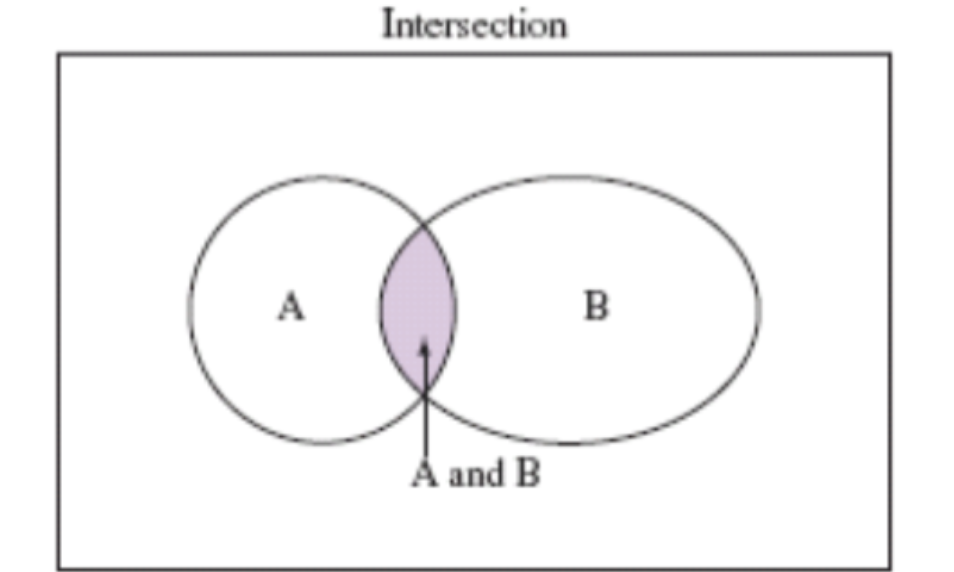
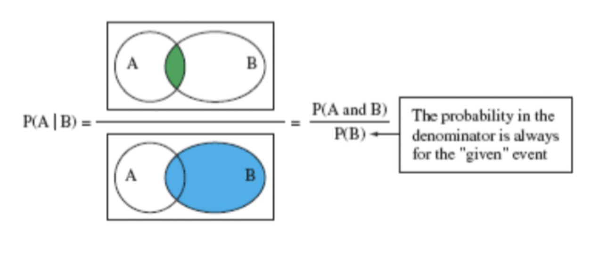

Week 5
Sociology 106: Quantitative Sociological Methods
February 17, 2026
Housekeeping
HW #1: feedback?
HW #2: feedback?
HW #3: due Thursday, February 19 at 11:59 PM - Ideal to use your final project data
Paper Proposal (5%): due Thursday, February 26, 11:59 PM - A two-page double-spaced proposal for your final paper. - Here’s an example of what I expect.
Academic Integrity Asignment due Friday, May 8, 11:59 PM
Questions?
Course Overview
Where we’ve been: Finding data and describing it (graphs, summary statistics)
Where we’re going: Inferring things about the “real world” from data
This week: We step back from actual data to think about the processes that generated the data — probability models that will power our inferences
Agenda
Basics of Probability
- Probability models
- Sample spaces
- Density curves
- Rules of probability
- Probabilities of multiple events
Probability Models
To make inferences, we first need to model the processes that generate data
Randomness and Probability
A phenomenon is random if individual outcomes are uncertain but there is a regular distribution of outcomes over many repetitions
- Examples: rolling a die, playing the lottery, taking a standardized test
The probability of an outcome is the proportion of times it would occur in a very large number of independent repetitions
\[P(A) = \frac{\text{number of repetitions where A occurs}}{\text{total number of repetitions}}\]
Repetitions are independent if the result of one does not influence the result of others
Example: A Coin Toss
While the result of any single coin toss is random, the result over many tosses is predictable as long as the tosses are independent
If tosses are independent, then we can say that the probability of tossing “heads” is the proportion of “heads” in a large number of trials

This illustrates how randomness at the individual level produces predictability at the aggregate level
Calculating Probabilities
Empirical approach
We can calculate probabilities by observing many trials of a random phenomenon
The sample proportion of the number of times the outcome occurred is the probability
This is an estimate of the actual probability, but a reasonably good one as we observe more and more trials
Theoretical approach
- We can also calculate theoretical probabilities based on assumptions about the random phenomena (i.e., all die rolls equally likely)
Probability Models
Probability models are theoretical models that mathematically describe the outcome of random processes. They consist of two parts:
Sample space (S): This is a set, or list, of all possible outcomes of a random process. An event is a subset of the sample space
A probability for each possible event in the sample space S
Properties of Probability Models
Three fundamental properties:
- Range: Probabilities for any given event range from 0 (can’t happen) to 1 (happens every time)
- Formally, for any event A: \(0 \leq P(A) \leq 1\)
- So, the range of probability must be between 0 and 1
- Exhaustiveness: \(P(S) = 1\). That is, the sample space is exhaustive of all possibilities
- In other words, there cannot be any limits on the probability of an occurance
- Complement rule: The probability of an event not occurring is 1 minus the probability that it does occur
- \(P(\text{not } A) = 1 - P(A)\)
- \(P(\text{not } A)\) is called the complement of A
Probability Models: Example
Probability model for a coin toss:
Sample space S: {Heads, Tails}
Probabilities (assuming a fair coin):
- \(P(\text{Heads}) = 0.5\)
- \(P(\text{Tails}) = 0.5\)
Check: Does this fit the properties?
- Range: Both probabilities are between 0 and 1 ✓
- Exhaustiveness: \(0.5 + 0.5 = 1\) ✓
- Complement: \(P(\text{not Heads}) = P(\text{Tails}) = 1 - 0.5 = 0.5\) ✓
Sample Spaces
Every probability model starts by defining what outcomes are possible
Compound Events
This is simple enought – but becomes more useful when we want to predict compound events that are the result of multiple trials
Calculate the probability of compound events by enumerating all possible outcomes and assigning a probability to each outcome
Example: What’s the probability of getting two heads in two coin flips?
We need to consider all possible outcomes and their probabilities
Example 1: Order matters
A basketball player shoots three free throws. Each shot is either a Hit (H) or Miss (M).
Sample space (all possible sequences):
\[S = \{HHH, HHM, HMH, HMM, MHH, MHM, MMH, MMM\}\]
- Total outcomes: 8
- Reason: Each shot has 2 outcomes → \(2^3 = 8\)
- 🔑 Order matters (HHM ≠ HMH)
- HHM = Hit, Hit, Miss
- HMH = Hit, Miss, Hit
- These are different sequences!
Complement Shortcut: “At Least One”
The complement rule is especially useful for “at least one” problems
Example: What is the probability of getting at least one head in 3 coin flips?
We could list every outcome with at least one head… but it’s easier to use the complement:
\[P(\text{at least one head}) = 1 - P(\text{no heads})\]
\[= 1 - P(TTT) = 1 - \frac{1}{8} = \frac{7}{8}\]
Why this works: “at least one head” and “no heads” are complements — one of them must happen, so their probabilities sum to 1
Whenever you see “at least one,” think complement!
Example 2: Order doesn’t matter
Now we only care about how many baskets are made, not the order
Sample space:
\[S = \{0, 1, 2, 3\}\]
- Each value represents the number of hits
- Total outcomes: 4
- 🔑 Order doesn’t matter
- HMH and MHH both → 2 baskets
- We collapse multiple sequences into single counts
Example 3: Continuous outcomes
A nutrition researcher feeds a new diet to a lab rat and measures weight gain (grams)
Sample space:
\[S = [0, \infty)\]
- Any non-negative real number is possible
- Infinite number of outcomes
- 🔑 Continuous sample space
- Can’t list all outcomes individually
- Must use intervals and density curves
Comparing Sample Space Types
| Scenario | Type of Sample Space | Order Matters? | Number of Outcomes |
|---|---|---|---|
| Free throw sequences | Discrete | ✅ Yes | 8 |
| Number of baskets | Discrete | ❌ No | 4 |
| Weight gain | Continuous | ❌ No | Infinite (∞) |
Key takeaway: The same physical situation (free throws) can have different sample spaces depending on what question we’re asking!
Discrete vs. Continuous Sample Spaces
Discrete sample spaces deal with data that can only take on certain values, known in advance (that is, categorical data)
- Example: Throwing a single die → \(S = \{1, 2, 3, 4, 5, 6\}\), each with probability \(1/6\)
- These are straightforward because we can list all possible outcomes
Continuous sample spaces contain an infinite number of outcomes. They are typically intervals of possible, continuously distributed outcomes
- Example: Picking a random real number between 0 and 1 → \(S = [0,1]\)
Question: How do we assign probabilities to outcomes in an infinite sample space?
Probabilities in Continuous Sample Spaces
We use density curves to represent probabilities across the continuous sample space, and compute probabilities for intervals as the area under the curve
Example: Uniform density curve over \(S = [0,1]\)
Uniform density curves represent when all outcomes in a continuous sample space are equally likely
The shaded portion represents:
\(P(0.3 \leq x \leq 0.7) = (0.7 - 0.3) \times 1 = 0.4\)

Density Curves: Properties and Types
Properties:
- P(single point) = 0 — only intervals have non-zero probability
- Total area under the curve = 1
- Density curves are always non-negative
Common types we’ll encounter (we’ll use these extensively when we study the normal distribution):
Questions?
Rules of Probability
Now that we know what outcomes are possible, we need rules for calculating the probability of combined events
Union of Events and the Addition Rule
The union of A and B (“A or B”) consists of outcomes that are in A, or in B, or in both A and B. Notation: \(A \cup B\)

For the union of two events,
\[P(A \text{ or } B) = P(A) + P(B) - P(A \text{ and } B)\]
We subtract \(P(A \text{ and } B)\) to avoid double-counting outcomes in both events
If the events are disjoint (mutually exclusive), then \(P(A \text{ and } B) = 0\)
\[P(A \text{ or } B) = P(A) + P(B)\]
Disjoint events have no overlap, so there’s nothing to subtract
Addition Rule: Worked Example
Example: I draw one card from a standard deck. What is the probability that I draw a club or a face card?
- \(P(\text{club}) = 13/52\) (13 clubs in the deck)
- \(P(\text{face card}) = 12/52\) (4 jacks + 4 queens + 4 kings)
- \(P(\text{club and face card}) = 3/52\) (jack, queen, king of clubs)
Applying the addition rule:
\[P(\text{club or face card}) = \frac{13}{52} + \frac{12}{52} - \frac{3}{52} = \frac{22}{52} \approx 0.42\]
We subtract \(3/52\) because the jack, queen, and king of clubs are both clubs and face cards — without subtracting, we’d count them twice!
Intersection and Conditional Probabilities
The intersection of A and B (\(A \cap B\)) consists of outcomes that are in both A and B — the overlap between two events
The conditional probability of event A, given that event B has occurred, is:
\[P(A|B) = \frac{P(A \text{ and } B)}{P(B)}\]
- \(P(A|B)\) is read as “the probability of A, given B”
- Interpretation: Of all the times that B occurs, \(P(A|B)\) is the proportion of times that A also occurs

Conditional Probabilities: Connection to Marginal Frequencies
Note that this is equivalent to the marginal frequency, which we discussed last week
This shows how probability theory connects to the descriptive statistics we’ve already learned
Multiplication Rule
For the intersection of two events:
\[P(A \text{ and } B) = P(A) \times P(B|A)\]
Alternatively: \(P(A \text{ and } B) = P(B) \times P(A|B)\)
It doesn’t matter which event we choose first!
Independent Events
If two events are independent, the probability that one event occurs is not affected by whether the other event occurs
This implies:
- \(P(B|A) = P(B)\)
- \(P(A|B) = P(A)\)
- \(P(A \text{ and } B) = P(A) \times P(B)\)
Example: Coin flips are independent - knowing the first flip doesn’t tell you anything about the second flip
Independence and Sampling
A common way to determine independence: how are you sampling?
- With replacement: Put the item back before drawing again → draws are independent (probabilities don’t change)
- Without replacement: Keep the item out → draws are dependent (probabilities change after each draw)
Example: An urn has 7 red and 3 blue marbles
- With replacement: \(P(\text{Red 2nd draw}) = 7/10\) regardless of 1st draw
- Without replacement: \(P(\text{Red 2nd} | \text{Red 1st}) = 6/9\), but \(P(\text{Red 2nd} | \text{Blue 1st}) = 7/9\)
Multiplication Rule: Worked Example
With replacement (independent draws):
\[P(RR) = P(R) \times P(R) = \frac{7}{10} \times \frac{7}{10} = \frac{49}{100}\]
Without replacement (dependent draws):
\[P(RR) = P(R_1) \times P(R_2 | R_1) = \frac{7}{10} \times \frac{6}{9} = \frac{42}{90}\]
Notice the difference: without replacement, getting a red marble first changes the probability of getting a red marble second
Questions?
Next Week: Probability Distributions
We will learn about random variables, which are numerical measurements of a random phenomenon that take on particular values (or ranges of values) with certain probabilities
- We can represent any variable we’ve talked about so far in this class—hair color of students, height, income—as a random variable
Then, we’ll look at probability models of the distributions of random variables
Weekly Assignment #4
You’ll answer some questions based on lecture today. You will not need a dataset.
HW #4: due Thursday, February 26 at 11:59 PM
Paper Proposal (5%)
A two-page double-spaced proposal for your final paper is due on bCourses by Thursday, February 26 at 11:59 PM. Here’s an example.
Your proposal should include:
- Research question - What are you trying to answer?
- Why it matters - Why should we care about this question?
- Hypotheses - What do you think the answer is, and why?
- Data source - What dataset will you use?
- Key variables - Identify your independent and dependent variables
Note: You do not need to discuss statistical techniques at this point.